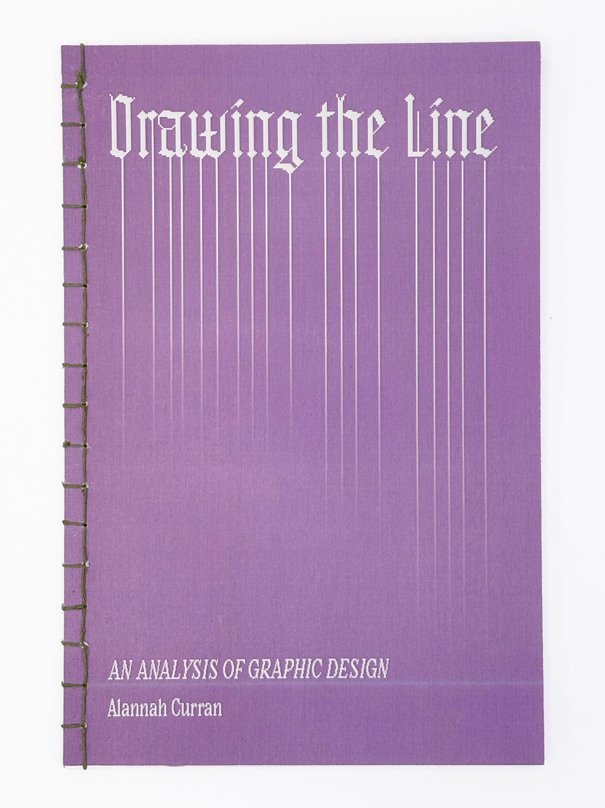

DESIGN • DRAWING THE LINE: AN ANALYSIS OF GRAPHIC DESIGNSPRING 2026

What is graphic design? Who is a graphic designer? This 60+ page book engages with these questions by analysing chosen examples of design found in my environment, in books, and on the internet, and organizing them into four self-defined categories. Integrates a conversation with a classmate in which we compare our perspectives on the matter. Hand-bound with a Japanese stitch method. 𖦹 SKILLS: Book-making, Editorial Design, Typography𖦹 SOFTWARE: Adobe InDesign, Illustrator SELECTED SPREADS